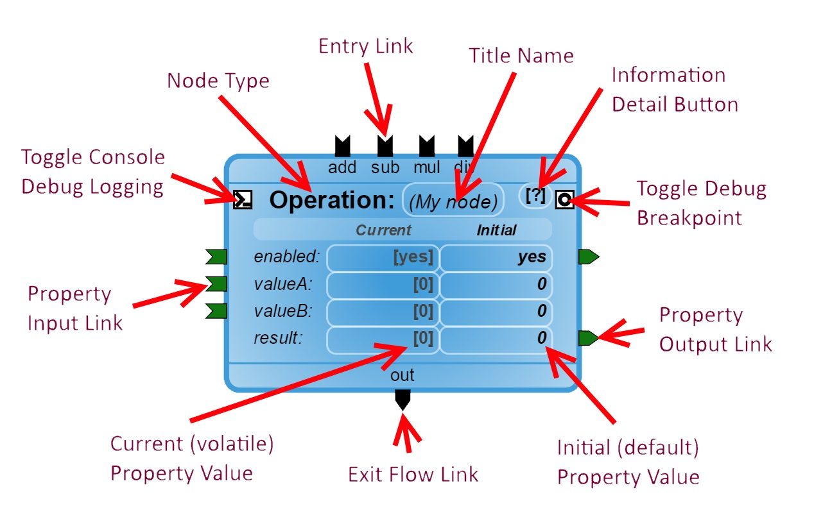

The most important part of wcPlay's node based scripting system, is the node! So let's dig into how they work, and how you will be interacting with them. Lets start with an extreme closeup of a node:

Title Area
The node type is the large bold text label near the top of the node. Any custom Title name will appear between the parenthesis '()' block, you can click on this to change it at any time.
Further to the right of the title name is the information detail button, clicking on this will show a dialog that further explains what the node does.
Properties
Properties make up the center area of the node. Each property takes up a row, and are made up of three columns; their name, their current (or volatile) value, and their initial (or default) value. The current value is what the script uses throughout execution and is constantly changing, while the initial values are applied to the current value on startup and are the values recorded in your script file when you save it.
Chaining
Chains determine the flow of your script as they connect nodes together into sequences. They are the curved lines that make a connection between two links. There are two types of chains, flow and property.
Flow Chains
Flow chains make up the overall flow of your script, they are responsible for activating a new node and then continueing to the next node, or nodes, in a sequence. Conditions throughout the chain path will often cause it to redirect to alternate routes. A node connects to flow chains through their link connectors on their top and bottom. The Entry links on top will activate the node and cause it to perform its operation, while the Exit links on the bottom are activated when the node has finished a task.
The example node above has four Entry links, 'add', 'sub', 'mul', and 'div'. It also has a single Exit link 'out'. The operation it does depends on which Entry link was activated, but only a single Exit link will activate once that operation is finished.
Property Chains
Property chains handle all of the information traffic between nodes by passing data from one to another. Data always passes from the Output link on the right side of a node to the Input link on the left side.
In the example above, an operation is done between property 'valueA' and property 'valueB', and then copied into the property 'result'. When the result has been assigned its new value, it will activate its output link to send that new value to all other properties attached to it, and so on.
Debugging
For debugging, each node comes with two toggle buttons that appear as squares on the left and right side of the title label. The left side enables debug logging, which will output messages to the browsers console whenever various parts of the node are activated. This can be a very useful tool for solving problems you may be having with your script. The right side toggles a breakpoint on your node, which causes the execution of the script to pause whenever that node is activated. More information about the breakpoint system can be found later in the tutorial.
Return to the Getting Started tutorial.
Continue to the Debugging tutorial.